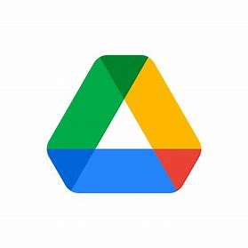
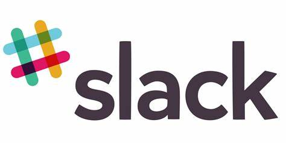
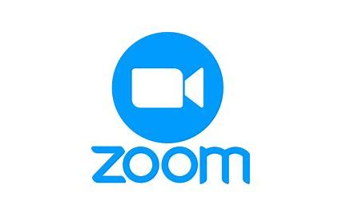

5 aplicaciones web más famosas en la actualidad
WhatsApp Web
Fecha de lanzamiento: 21 de enero de 2015
Empresa desarrolladora: Meta Platforms, Inc.
Característica destacada: Sincronización en tiempo real con la app móvil, permitiendo a los usuarios enviar y recibir mensajes
desde su navegador sin necesidad de tener su teléfono a mano.
Tecnologías/Herramientas:
- JavaScript (React)
- HTML5/CSS3
- WebSocket
- IndexedDB
- Service Workers
Google Drive

Fecha de lanzamiento: 24 de abril de 2012
Empresa desarrolladora: Google LLC.
Característica destacada: Almacenamiento en la nube con integración total con otras herramientas de Google como Docs, Sheets y Gmail, permitiendo colaboración en tiempo real.
Tecnologías/Herramientas:
- AngularJS
- JavaScript (Closure Library)
- Python
- Google Cloud Platform
- WebRTC
Spotify Web Player
Fecha de lanzamiento: 30 de marzo de 2012 (para escritorio; Web Player lanzado en 2013)
Empresa desarrolladora: Spotify AB
Característica destacada: Acceso instantáneo a millones de canciones sin necesidad de descargar una aplicación, con recomendaciones personalizadas basadas en el historial de escucha del usuario.
Tecnologías/Herramientas:
- JavaScript (React)
- HTML5/CSS3
- Node.js
- Web Audio API
- Service Workers
Slack Web

Fecha de lanzamiento: 14 de agosto de 2013
Empresa desarrolladora: Slack Technologies (ahora parte de Salesforce)
Característica destacada: Comunicación en equipo a través de canales organizados, con integración de herramientas y servicios externos como Google Drive, Trello, y GitHub.
Tecnologías/Herramientas:
- JavaScript (React, Redux)
- Electron
- Node.js
- WebRTC
- API Rest
Zoom Web

Fecha de lanzamiento: 2011 (web app lanzada más tarde)
Empresa desarrolladora: Zoom Video Communications, Inc.
Característica destacada: Videollamadas de alta calidad con la capacidad de hospedar reuniones con cientos de participantes, con opciones avanzadas como compartir pantalla y grabación en la nube.
Tecnologías/Herramientas:
- JavaScript (React
- WebRTC
- HTML5/CSS3
- WebSocket
- API Rest